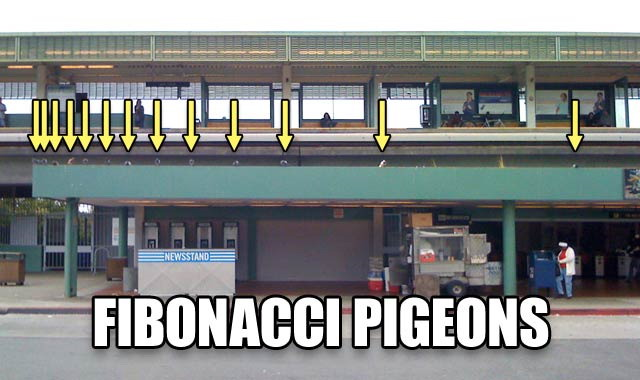

After watching a video by Numpherphile with Dr. James Grime illustrating an interesting relationship of Fibonacci numbers and their remainders known as a Pisano Period, I decided to explore a bit on my own and write a solver in Python.

Do these Pigeons know the secret?In a Fibonacci series, the current number in the series is the sum of the previous two numbers. If a divisor is chosen, each number in the series is divided by the divisor, and the remainder is taken, interesting patterns emerge. For each divisor (ex: 3, 5, 7, 10, 11) a repeating pattern of varying length is found. For a divisor of 3, a pattern with length 8 repeats. For 7, a pattern of length 16. Each pattern always initiates with a 0 first followed by a 1.
My implementation to illustrate these unique patterns is found below.
def main():
fibonacci_length = 40
divisor = 11
series = generateFibonnaci(fibonacci_length)
remainder = [num % divisor for num in series]
pattern = findPattern(remainder)
period = len(pattern)
print(series)
print(remainder)
print(pattern)
print(period)
def generateFibonnaci(size):
result = [0,1]
for i in range(size - 2):
result.append(result[i]+result[i+1])
return result
def findPattern(series):
length = 0
for i in range(2, int(len(series)/2)):
if series[0:i] == series[i:2*i] :
return series[0:i]
return []
if __name__ == '__main__':
main()
For the above example, the following is returned (series shortened):
[0, 1, 1, 2, 3, 5, 8, 13, 21, 34, 55, 89, 144, 233, 377, 610, 987, 1597, ...] [0, 1, 1, 2, 3, 5, 8, 2, 10, 1, 0, 1, 1, 2, 3, 5, 8, 2, 10, 1, 0, 1, ...] [0, 1, 1, 2, 3, 5, 8, 2, 10, 1] 10
For larger divisors, larger Fibonacci sequences may be necessary. Be careful if you decide to be ambitious - you can easily push your laptop into submission.
So why is this amusing? No one has come up with a deterministic way to predict the length of the pattern (known as the Pisano Period). For more crazy relationships using Fibonacci numbers and the Pisano Periods watch the Numberphile video on YouTube or read the WikiPedia article on Pisano Periods.